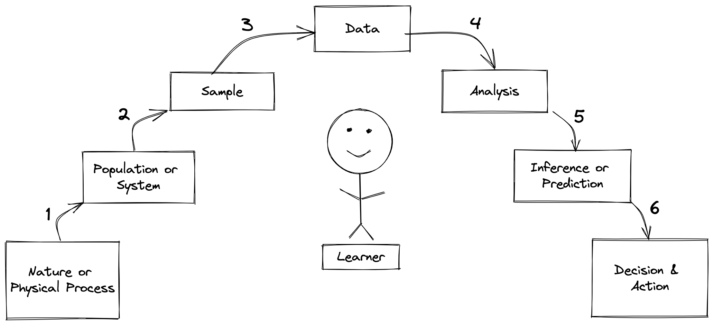
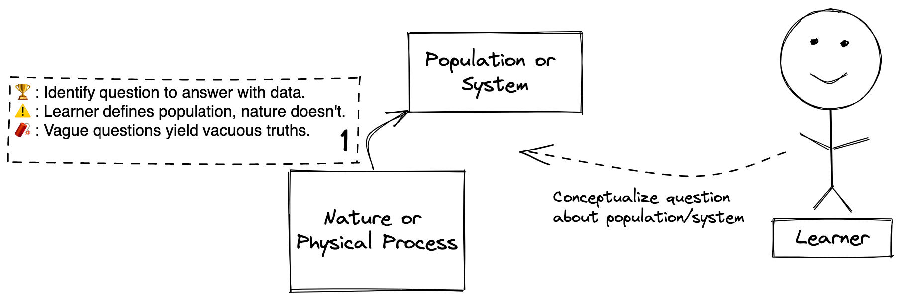
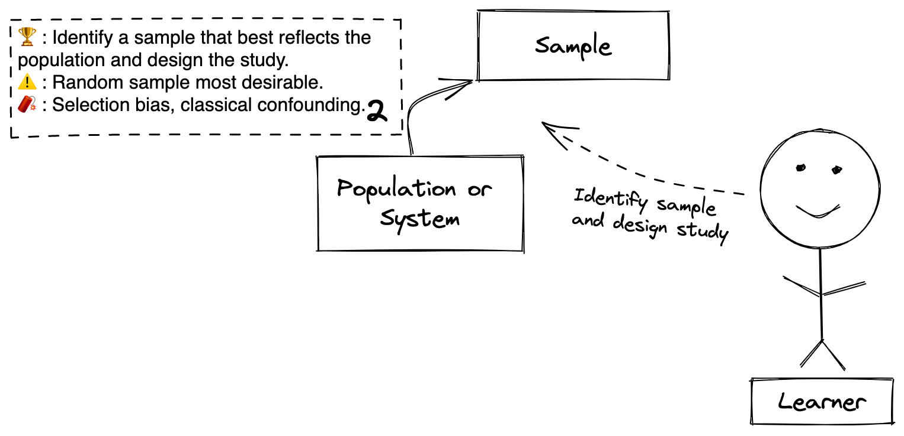
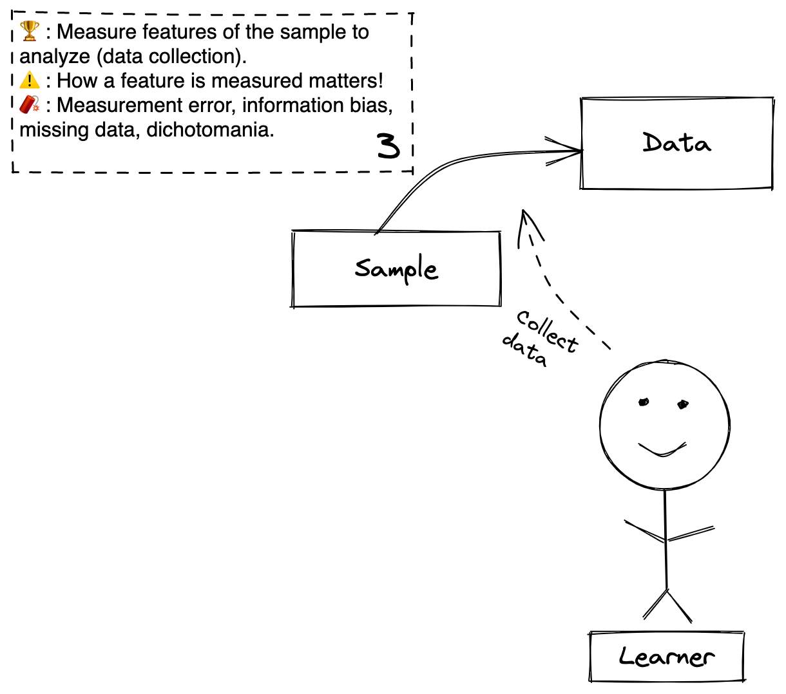
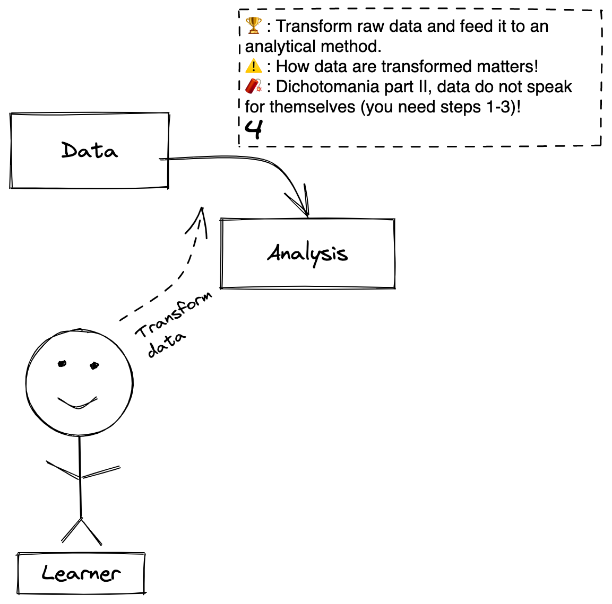
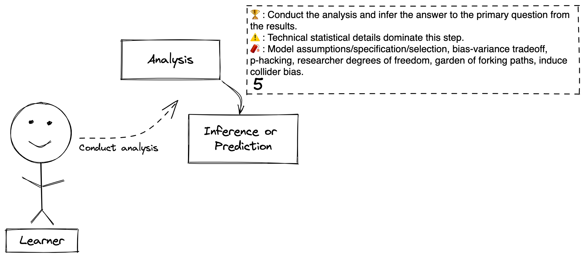
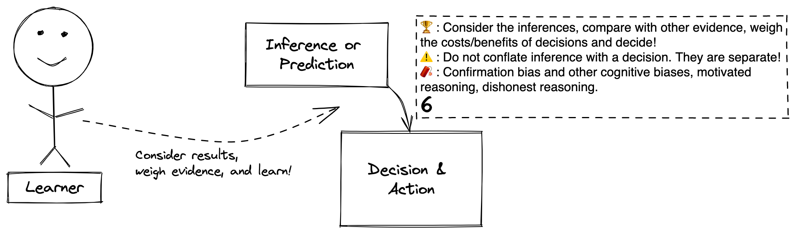

The Epistemic Arc - a conceptual map about how to learn from data in the presence of uncertainty
Introduction
Learning from data is hard.
The world is full of noise and nonsense masquerading as “insights” from data analyses.
If its so easy to go wrong, how can we reliably learn from data and avoid the many common analytical shenanigans that can ruin our results?
I recently purchased and watched the videos for Frank Harrell’s incredible statistics short course, Regression Modeling Strategies(for the more advanced stats enthusiasts, this course outlines an incredible method for principled statistical analyses). As part of the course, Drew Levy gave a wonderful presentation about model selection using causal models, and, almost as an aside, he included a graphic about his framework for how he conceptualizes analyses of observational data.
I was struck by the elegance of his framework. It concisely summarizes the steps in the learning process and identifies the many danger zones that can ruin your learning (click here to read more from Drew Levy’s website). It functions as a great conceptual roadmap for how to reliably learn from data while avoiding analytical shenanigans
In this post, I will adapt and expand the framework to explain how it provides a unified roadmap for learning from data. This framework is flexible and applies just as well to observational epidemiological studies as to randomized trials, physical experiments, any other branch of science, and even in our daily lives.
This will be a high level overview. In future posts, I will explore specific danger zones in more detail. Beyond organizing important statistical principals, this framework has important philosophical and psychological consequences. I also aspire to explore theses areas more in future posts.
The Epistemic Arc

The above figure depicts the Epistemic Arc, which describes the process that anyone must follow when learning from data in the presence of uncertainty.
The first highlight is that there is a main character to this story: you. You are the hero or heroine of this epistemic adventure! You are a player on the statistical stage. You are an inseparable part of the learning process. You are the Learner.
Each box represents a specific object that is required for the learning process (a noun). Each arrow depicts a step that must be performed to move from one object to the next (a verb). Let’s zoom in on each step to define the objects involved and the actions performed during it.
Step 1. Nature -> Population

Definitions
Step 1: The process of nature or a physical process producing a population or system the Learner wishes to learn more about.
Nature or Physical Process: I define nature as whatever physical stuff exists upon which the drama of physical reality unfolds. Nature is the generator of the physical world the Learner encounters and wishes to know more about. A physical process is a mechanistic derivative of nature, perhaps built by humans, that may itself produce interesting phenomena to learn about. Examples: Nature - quarks, neurons, cats, quasars; Physical process - factory that produces bowling pins, a pendulum swinging in a clock.
Population or System: A population is a distinct collection of entities derived from nature that is interesting to the Learner. A system is a set of interacting entities carved out of the larger system of physical reality. Examples: Population - Orange cats in Austin, Texas, children with ADHD, all the weeds that grow between sidewalk cracks; System - trees that talk to each other using fungi, academic medical education, ATP synthesis in your body from the electron transport chain.
Explanation
Goal: The Learner identifies what he or she wishes to learn about either in nature or in a population or system that emerges from it. This is where the Learner formulates the questions to answer with data. (e.g. For the weed between sidewalk cracks example, perhaps the question is: which type of pesticide most effectively kills weeds between sidewalk cracks?)
Caution: Note this is a highly philosophical step, even if it seems straightforward to the Learner. There are no populations or systems in nature. These are concepts that the Learner overlays onto nature. Why does this matter? Because we, the Learners, are making analytical decisions about the most fundamental elements in the epistemic arc by defining the population or system to study ourselves (What is the definition of a weed? What is a crack? What is a sidewalk? Does a driveway count? Where will study the weeds?).
Beware: This step sets the entire trajectory of the epistemic arc the Learner will follow. Precise questions yield precise answers. Vague questions produce vacuous answers that can be stretched, misshapen, and filled with whatever meaning one desires. Squishy questions may help get publications, but we won’t be any closer to learning truth.
Bonus: Sander Greenland recently argued that the discipline of statistics has explicitly causal foundations. In his paper, he says, “Whether answering the most esoteric scientific questions or the most mundane administrative ones, and whether the question is descriptive, causal, or purely predictive, causal reasoning will be crucially involved (albeit often hidden to ill effect in equations and assumptions used to get the”results”). I think this is correct and this step demonstrates and contextualizes his argument.
Step 2. Population -> Sample

Definitions
Step 2: The process of identifying (no data collection yet) a sample that can be further scrutinized and designing a process that can deliver appropriate inferences about the population or the natural process that generates it from the data collected from the sample.
Sample (noun): A subset of the population or a toy model of the system. These are the members of the population for whom the Leaner has the ability to collect data and directly learn from.
Explanation
Goal: The goal is for the Learner to identify what sample will generate data that is most informative for the questions and then to design the process to learn from the data in a way that will account fo the limitations of using an imperfect sample to learn about a (possibly theoretical) population. In science, this is study design - e.g. does the Learner need to conduct an RCT, case-control study, cross-sectional study, etc.
Caution: Randomness plays a big role in in our ability to learn about our population of interest from the sample. A random sample from the population as in a survey helps to ensure the sample is reflective of the population. A sample that is randomized to a treatment as in a randomized clinical trial helps to ensure what we learn about the causal process we are studying. Often randomness cannot be ensured at the level of the sample. In this case, study design and methods of causal inference help to make the sample reflects the population well enough to answer our question.
Caution 2: Confusing terminology - to sample (verb) is one method of obtaining a sample (noun), but that’s only one way. Sometimes your sample is given to you, such as obtaining all medical records for a given disease from an electronic medical record. In this case you have a sample, a subset of a larger population (all patients with the disease), but you didn’t sample the population for it.
Beware: Many crippling problems arise in this step even though you have not collected any data! Selection bias occurs when there’s a systematic reason your sample does not reflect your population. Confounding occurs when you choose a sample for whom data about an important feature of the sample that affects the relationship between the treatment/exposure and the outcome will be unavailable or uncollected. If your analysis does not have data about this feature, then what you learn could be systematically different than the truth.
Bonus: Directed acyclic graphs (DAGs) are a great way to graphically encode relevant information about the casual system, population, and sample from steps 1 and 2. I recommend their development in this step. DAGs can display not just confounding, but also selection bias (and here) and many other design considerations.
Step 3. Sample -> Data

Definitions
Step 3: The process of measuring features of the sample (i.e. collect data).
Data: A collection of measurements of variables (features) that describe different interesting aspects of the sample.
Explanation
Goal: The Learner measures values of the variables accurately!
Caution: Which variables are measured matters both because of the potential for confounding as discussed in step 2, as well as the potential to induce collider bias that could emerge in step 5. How variables are measured also matters. For example, continuous variables contain much more information than binary variables, so if the Learner chooses to classify a continuous variable as a binary variable (e.g. blood pressure as high or low instead of the systolic/diastolic measurements), then the Learner loses information before any analysis has been performed.
Beware: More crippling problems arise here. Measurement error refers to different ways of inaccurately collecting or recording data (e.g. measuring blood pressure in a screaming 3-year-old will not be accurate). Information biases are a related and overlapping group of problems that occur during the conduct of the study that will make the analysis inaccurate. Incomplete or missing data can ruin an otherwise well designed study. Dichotomania (as discussed in the caution) can be so damaging that it prevent the Learner from answering his or her question when they would have been able to if the variables were measured as continuous or ordinal.
Step 4. Data -> Analysis

Definitions
Step 4: The process of wrangling and transforming the raw data into a format that can be fed into an analysis.
Analysis: The method that will be used to answer the question (in the next step) comprised of the transformed data, the relationships between the data (e.g. which is a predictor and which is the outcome variable), and the mathematical and algorithmic machinery that will perform the computational operations.
Explanation
Goal: The Learner transforms the data accurately and in a way that maximally preserves information so that it can be analyzed.
Caution: How data are transformed matters, just like how they are measured matters. If a variable is measured as continuous and than transformed into a binary variable, that will harm the analysis. Also, many errors are induced in this step because of disorganization, clumsy human hands, and non-reproducible data management. Reproducible research methods are very practical and very valuable for preventing these errors.
Beware: Dichotomania can crop up again here! Also, if you happen upon an interesting data set, it is very tempting to start at this step. This is a fatal mistake. Many of the concerns we’ve discussed (e.g. selection bias, confounding, measurement error) occur before or during data generation. Steps 1-3 always proceed step 4, no matter how big is your data or how fancy is your machine learning technique, and if you are unsure of the quality of steps 1-3, consider step 4 fatally compromised.
Step 5. Analysis -> Inference

Definitions
Step 5: The process of conducting the analysis and answering the question using the data collected from the sample.
Inference or Prediction: Inference is the result of using data from the sample to learn about the population or system of interest. Prediction is using the data from the sample to understand what may be true about the population in the future. These are generally perceived as separate but related learning tasks, and the Learner’s goal may only be one or the other.
Explanation
Goal: The Learner conducts the analysis to produce inferences or predictions that he or she will use to answer the question.
Caution: This is where technical statistical and mathematical considerations dominate. Whole PhD theses are written over very specific technical details in this step. Let the Learner be careful and seek appropriate technical support.
Beware: Due to the technical nature of this step, many sneaky risks lurk here. Model assumptions, model specification, and model selection refer to the process of developing statistical models that reflect in math the most important concepts required to answer the question. The bias-variance trade off is an important decision about how flexible a model should be to reflect the observed data. P-hacking and researchers degrees of freedom/garden of forking paths are all non-mathematical methods of massaging the data (intentionally or unintentionally) to get an interesting or publishable result (here is a blog post that discusses many of the preceding points). Also this is where you can induce bias by adding variables into your analysis, called collider bias(are you frightened?). Analysis workflows (Bayesian workflows here, and here, RMS workflow - chapter 4, particularly 4.12 - and here) can help guide you safely through this treacherous valley of death and deceit.
Step 6. Inference -> Decision

Definitions
Step 6. The process of using the inference along with other information that the Learner knows to draw conclusions about the question and then decide how to act given what has been learned.
Decision & Action: These are the decisions and actions that result from what was learned. These are the answers to the questions “now what do I do with what I learned?”
Explanation
Goal: The Learner considers the inferences or predictions that result from the analysis against other information that the Learner knows (i.e. the results of many other epistemic arcs) and against the costs and benefits of different outcomes of decisions to decide what to is the best course of action based on the new knowledge.
Caution: Inferences and predictions are not decisions. These are very different concepts that are often conflated together. Their conflation leaves out two crucial elements. One is that that you, the Leaner, bring many other learned things to this step (I conceptualize it as the intersection of many intersecting epistemic arcs). This additional information is relevant for decision making. The second is that costs and benefits from outcomes of decisions are nowhere reflected in this learning process (they also require their own epistemic arcs!; this blog gives a helpful primer on decision curve analysis).
Beware: This is where human psychology with all of its frailty and biases can dominate. We all can fall prey to confirmation bias and many other cognitive biases, to motivated reasoning, and to dishonest reasoning. The consequence of us being an inseparable part of the learning process is that we bring our psychological and moral baggage along with us :/
Conclusion
{kind=link}
Step by step, we’ve walked along the Epistemic Arc to learn from data in the presence of uncertainty. Along the way, we’ve noted some areas where we must use caution and many explosive areas we must navigate with extreme care. We’ve also seen how the Learner is not only the primary agent doing the learning, but also a necessary actor in the learning process. The Epistemic Arc unifies these disparate philosophical, psychological, and statistical concepts into a single framework that we can use as a roadmap to conduct principled data analysis and avoid producing noise and nonsense that masquerade as “insights”.